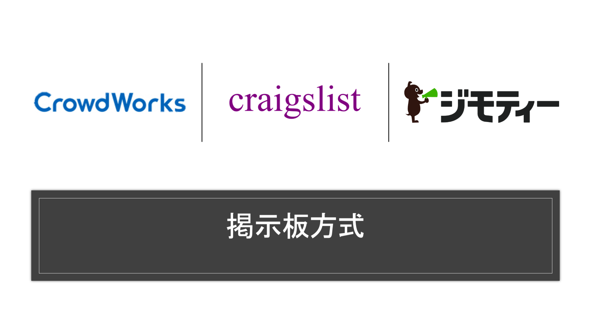
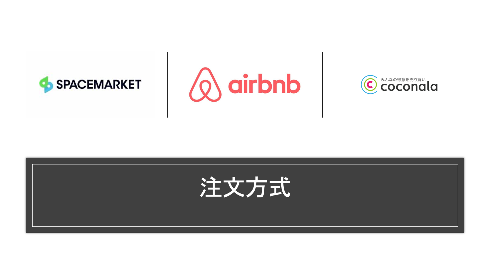

マッチングシステム構築はじめの一歩 ざっくりシステム3パターン
なにか始めたいという人にピッタリの内容かと思います

目次
この記事はこんな人が書いています
 だちけん
だちけん
株式会社ムジカルを設立し、webアプリケーションの開発、webマーケティングを担当しています。
webアプリケーションでは、Vue.js、Ruby on Rails、Node.jsを用いての開発が得意です。
まったくゼロの状態から、要件定義を含めてシステム開発にとりかかったことで、幅広い知識を学習しながらよしなに進めるスキルを身につけました。
フリーランスとして、エンジニアリングやコンサルティングも行なっています。
詳しくはaboutを読んでみてください。
webサービスを作ってみたい！と思った時、イメージするのはおよそ以下の3つじゃないでしょうか。
- TODOリスト
- SNS
- マッチングサービス
もちろん、突き詰めればそれぞれすごくややこしいシステムになっていきます。
最もシンプルな仕組みを考えた時に下に行く方が難しいイメージですね。
今回はこの中でマッチングシステムを作りたい！となった時に考えるべき、「どんなマッチングシステムにすべきか？」をまとめてみました。
(実はコンサルティングの仕事のついでというのは秘密)
そもそもマッチングシステムとは？
今回「マッチングシステム」と呼んでいるのは、以下の定義のものになります。
なかなかふわっとしている言語なので、あくまで私が決めた定義であることにご注意ください。
- ユーザー2名が相互に目的を持って「知り合う」ためのシステムであること
- ユーザーには、「受領者」「提供者」の2つの側面があること
- 「知り合う」ユーザーはその目的のもとに「受領者と提供者」の組み合わせであること
つまりユーザーA、ユーザーBという2名のユーザーがいた時にその2名のどちらかが「受領者」どちらかが「提供者」として「知り合う」ためのアプリですね。
もちろん、この定義にマッチしないアプリもたくさんある(デーティングアプリとかどうなんだろう…)のですが、今回はこの定義のもとお話しさせてください。
そうじゃないと、SNSとの違いが曖昧になっちゃったり、話がややこしくなりそうなので…
マッチングシステムの3パターン
さてそんな形で定義したマッチングシステムですが、システムとして考えると以下の3パターンに分類できるかと思います。
それぞれ、システムとして考えた時の特徴をまとめていきますね。
掲示板方式

もっともシンプルなシステムとして考えると、この形になるのではないでしょうか。
かの有名なクレイグスリストもこの形ですね。
クラウドワークス、ジモティーもこの形になるのではないでしょうか。
掲示板方式のシステムがどんなものかというのをあらためてまとめると以下のようになるかと思います。
1. 「受領者」が要件・希望を記入
2. 「提供者」が「受領者」の記入した要件・希望にマッチしたものを提供できると考えた時「応募」を行う
3. 「応募」 があった「提供者」の中から、「受領者」が適切な「提供者」を選んでマッチング
掲示板方式のメリットですが、以下のようなものが挙げられますね。
1. システム構築が容易(SNSと近しい)
2. 柔軟なニーズに対応可能なシステムが構築しやすい
3. 「受領者」となるユーザーが一定数以上いればアクティブなシステムのように見える(「受領者」の数がネットワーク効果に与える影響が大きい)
一方、デメリットとしてはこのような感じかと。
1. アクティブな「提供者」が一定数いないと「受領者」が要件・希望を入力しづらい
2. 「受領者」の入力内容に依存するため、契約までのステップが複雑化しがち
3. 「受領者」目線で最適なマッチングが発生しづらいため、「受領者」への提供価値の担保が難しい
「掲示板」というタイトルからもわかる通り、あくまで投稿をする(= 「受領者」が希望を書き込む)サービスなので、その投稿を増やす施策に工夫が必要にもかかわらず、それが難しいというシステム構造だと言えます。
逆に言えば、そこさえ乗り越えられればいい感じになるのかもしれません。
注文方式

つぎに注文方式のシステムです。
AirBnB、スペースマーケット、ココナラなどがこちらの注文方式を採用していますね。
あらためてどんなシステムになるのかをまとめてみました。
1. 「提供者」が提供できるメニューを投稿
2. 「受領者」が「提供者」のメニューを選んで依頼
すでに掲示板方式よりシンプルな流れが見えますね。
ではあらためてメリットです。
1. 「受領者」目線ではシンプルに見えるので、マッチングが発生しやすい(障壁が少ない)
2. 「提供者」側はコストが高い一方、熱量ある「提供者」同士で競争原理が働きやすい
3. 「受領者」は数あるメニューから選べるので納得感あるマッチングがおきやすい
スタンダードなマッチングシステムと聞いて想像されるのがこちらだと思います。
やっぱり多くの方が採用するだけのメリットがあります。
とくに「受領者」側にとってメリットが多いことがこちらのシステムの特徴ですね。
「受領者」のニーズ>「提供者」のニーズになりやすいシーンではこちらのシステムが有効と言えます。
以下デメリットです。
1. メニューが不足しているとマッチングが成立しづらい
2. システム的にメニューにない対応ができない
3. 「受領者」側の動きが他の受領者に見えづらいためアクティブなシステムかどうかがわかりづらい
こちらのデメリットについてはネットワーク効果の観点でいうと、どちらも参入障壁になりうるとも捉えられるかと思います。
後発組が不利になりやすい構造です。
即時対応方式
最後に即時対応方式です。
こちらはかなり例外的な仕組みといえます。
Uber、Uber eatsがこの枠ですね。
Uberしか登場してませんが、この形態のマッチングシステムはアメリカでも「Uber for x」と呼ばれる形です。
必要な時にだけ利用 -オンデマンド型サービス15選【Uber for X】
「誰に頼んでも変わらない」ニーズにすぐ対応できるのが強みです。
あらためて、仕組みは以下のようになります。
1. 「受領者」が希望を入力(もはや申請)
2. システム側が自動でアクティブな「提供者」を選定(または一番早く立候補した人など)
「受領者」「提供者」の両方から見てすごくシンプルで完成度の高いマッチング方式と言えます。
ただ「提供者」によるスキルの場合、「受領者」は「提供者」を選びたいはずなのでこの方式は向きませんね。
属人的でないスキル(= 配送、運転、軽作業など)に適したマッチング方法と言えそうです。
システム的に見たメリットは以下のようになります。
1. 「受領者」「提供者」双方にストレスを感じさせない設計のため、リテンションが高くなりやすい
2. マッチングを自動化できるという強みから、「提供者」のモチベーションを維持しやすい(実は最短距離の人じゃなくて…とか)
3. ユーザーの導線がシンプルなので、UIがシンプルな設計にできる
シンプルな画面操作はユーザーだけでなく開発者から見ても大きなメリットになりますね。
一方、デメリットです。
1. マッチングアルゴリズムどうする問題
2. 即時性が強みなので、通知周りを強く意識したシステムである必要がある(画面外も含めた導線設計が必要)
3. 通知が前提なので、webからスタートするのが難しい
デメリットとして「webからスタートするのが難しい」とあります。
これは、webシステムの方がアプリよりもユーザー獲得コストが安くなりやすいため、はじめの一歩としては難しいのかなあと思いあげてみました。
まとめ
さて今回は、マッチングシステムを開発したい！という方のためにマッチングシステムの3パターンを紹介してみました。
システムで提供したいサービスや、ドメインによって適切な形が変わってくるかと思いますので、ぜひ参考にしてみてくださいね。
このシリーズの次回として、どんなマッチングサービスにせよ設計時に考慮すべきポイントをまとめているので、そちらもぜひ記事が上がったら読んでください。